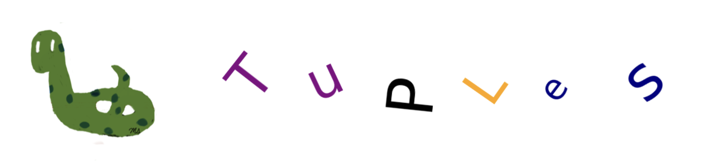
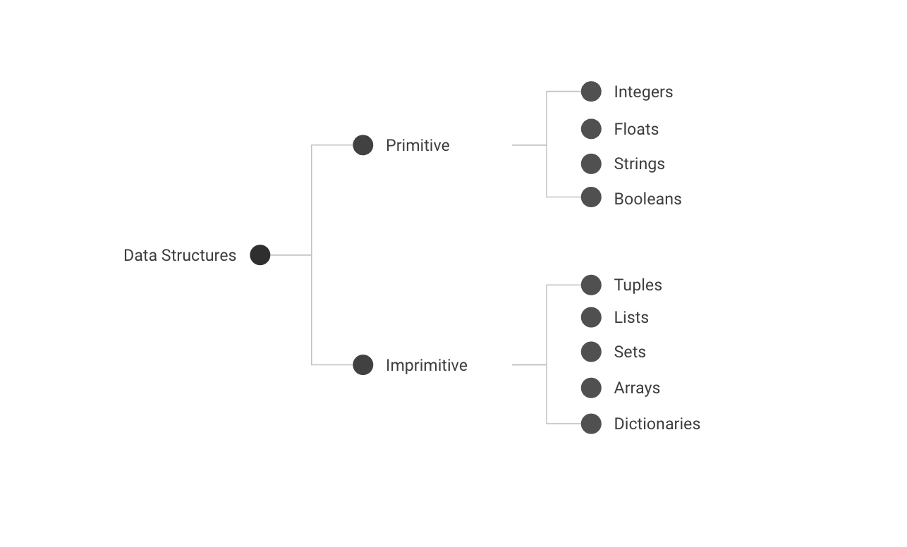

Chp-7: Tuples#

Chapter Objectives
By the end of this chapter, the student should be able to:
Explain the purpose and role of tuples.
Create and initialize tuples in differen ways.
Access individual elements or subtuples in a tuple using indexing and slicing.
Perform tuple operations.
Explain immutabilility.
Apply tuple methods.
Use loops to iterate through tuple elements.
Apply tuples to solve real-world problems.
Data Structures#
Data structures are used to store data. We have already seen some of them, including integers, floats, strings, and booleans. By using these structures, only one value can be stored.
\(3\) is an integer and represents a single value.
\(3.14\) is a float with a single value.
A string can be very long (containing many characters), but it is still a single value, such as ‘Hello’.
Boolean values are either True or False, again representing single values. Integers, floats, strings, and booleans are examples of
Primitive Data Structures, meaning they can store only one value.
In Python, there are more complex data structures called Non-Primitive Data Structures, which can store multiple values with mixed types and might have various functionalities, including indexing. Tuples, lists, sets, arrays, and dictionaries are some examples of non-primitive data structures.

Tuples#
Tuples are ordered sequences of values of mixed types.
Since a tuple is ordered, the order of its elements is important.
\(1,2\) and \(2,1\) are different.
Since there is an order, indexing also works for tuples and it is very similar to strings.
Values in a tuple can be of mixed types.
Integers, floats, strings, booleans, tuples, and lists (will be covered in the next chapter) can be values in a tuple.
The built-in tuple() function can be used to convert appropriate data types into a tuple.
Tuples are immutable (cannot be modified).
This is the main difference between tuples and lists.
Lists can be modified and will be covered in the upcoming chapter.
The advantages of being immutable are:
Values cannot be modified, ensuring data protection.
Immutability makes tuples simpler, leading to faster and more memory-efficient operations.
Create Tuples#
A tuple can be created using one of the following methods:
Using a comma-separated sequence: \(1, 2, 3\).
Enclosing a comma-separated sequence in parentheses: \((1, 2, 3)\).
Using the built-in tuple() function: tuple(1, 2, 3).
An empty tuple is represented by ().
If a tuple has only one value, a comma should be added right after that single value.
Example:
1,or(1,)Warning:
(1)is the integer1(1,)is the tuple with only one value, which is11is the integer11,is the tuple with only one value, which is1
Examples
# empty tuple
empty_tuple = ()
print('Tuple:', empty_tuple)
print('Type :', type(empty_tuple))
Tuple: ()
Type : <class 'tuple'>
# empty tuple with tuple()
empty_tuple = tuple()
print('Tuple:', empty_tuple)
print('Type :', type(empty_tuple))
Tuple: ()
Type : <class 'tuple'>
# tuple with only one value: 'USA'
mytuple = 'USA', # no paranthesis
print('Tuple:', mytuple)
print('Type :', type(mytuple))
Tuple: ('USA',)
Type : <class 'tuple'>
# tuple with only one value: 'USA'
mytuple = ('USA',) # with paranthesis
print('Tuple:', mytuple)
print('Type :', type(mytuple))
Tuple: ('USA',)
Type : <class 'tuple'>
# (1) is an integer not tuple
myint = (1)
print('Integer:', myint)
print('Type :', type(myint))
Integer: 1
Type : <class 'int'>
# ('USA') is string not tuple
mystr = ('USA')
print('String:', mystr)
print('Type :', type(mystr))
String: USA
Type : <class 'str'>
# tuple with mixed values: str, int, bool, float
mytuple = ('USA', 2, True, 9.123) # with paranthesis
print('Tuple:', mytuple)
print('Type :', type(mytuple))
Tuple: ('USA', 2, True, 9.123)
Type : <class 'tuple'>
# tuple in a tuple
# tuple with mixed values: str, int, bool, float, tuple
# (10,20,30) is a tuple in the tuple mytuple.
mytuple = ('USA', 2, True, 9.123, (10,20,30)) # with paranthesis
print('Tuple:', mytuple)
print('Type :', type(mytuple))
Tuple: ('USA', 2, True, 9.123, (10, 20, 30))
Type : <class 'tuple'>
tuple() function#
The built-in
tuple()function converts a string into a tuple, where each character of the string becomes an individual value in the tuple
mytuple = tuple('Hello') # convert string to tuple
print('Tuple:', mytuple)
print('Type :', type(mytuple))
Tuple: ('H', 'e', 'l', 'l', 'o')
Type : <class 'tuple'>
The built-in
tuple()function converts a range into a tuple, encapsulating a sequence of numbers within it.
myrange = range(2,8) # 2,3,4,5,6,7 are hidden in r
print('Range:', myrange)
print('Type :', type(myrange))
Range: range(2, 8)
Type : <class 'range'>
mytuple = tuple(myrange) # convert range to tuple
print('Tuple:', mytuple)
print('Type :', type(mytuple))
Tuple: (2, 3, 4, 5, 6, 7)
Type : <class 'tuple'>
Functions on tuples#
The following functions can take a tuple as input and return:
len(): the number of elements in a tuple.
max(): the maximum value in a tuple.
For strings, dictionary order is used, and max() returns the last string in the dictionary order.
min(): the minimum value in a tuple.
For strings, dictionary order is used, and min() returns the first string in the dictionary order.
sum(): returns the sum of the elements (if they can be added) in a tuple.
It does not work with strings.
It works for booleans: True is \(1\), False is \(0\).
Examples
numbers = (7,3,1,9,6,4)
print(f'Length : {len(numbers)}')
print(f'Maximum: {max(numbers)}')
print(f'Minimum: {min(numbers)}')
print(f'Sum : {sum(numbers)}')
Length : 6
Maximum: 9
Minimum: 1
Sum : 30
letters = ('r', 't', 'n', 'a', 'd')
print(f'Length : {len(letters)}')
print(f'Maximum: {max(letters)}') # dictionary order
print(f'Minimum: {min(letters)}')
Length : 5
Maximum: t
Minimum: a
numbers = (7,3,1,9,6,4,True) # True is considered as 1
print(f'Length : {len(numbers)}')
print(f'Maximum: {max(numbers)}')
print(f'Minimum: {min(numbers)}')
print(f'Sum : {sum(numbers)}')
Length : 7
Maximum: 9
Minimum: 1
Sum : 31
mytuple = (7,3,1,9,6,4,True, 'a')
print(f'Length : {len(mytuple)}') # only len() works for this tuple
Length : 8
Indexing and Slicing#
It is similar to strings.
mytuple = ('USA', 2, True, 9.123, 'NY', 'NJ', 100, False)
Examples
# first element
print(mytuple[0])
USA
# last element
print(mytuple[-1])
False
# index of 3 (fourth element)
print(mytuple[3])
9.123
# index = 2,3,4
print(mytuple[2:5])
(True, 9.123, 'NY')
# index =-4,-3,-2
print(mytuple[-4:-1])
('NY', 'NJ', 100)
The following slice starts from the element at index 3 and extends to the end.
# index = 3,4,...
print(mytuple[3:])
(9.123, 'NY', 'NJ', 100, False)
The following slice starts from the first element and goes up to the element at index 3.
# index = 0,1,2,3
print(mytuple[:4])
('USA', 2, True, 9.123)
Remark
There is a difference between the index -1 element and the slice [-1:].
Both of them point to the last element of the tuple.
The first one returns the last element, whereas the latter one returns a length-one tuple with the last element.
print(f'index -1 element: {mytuple[-1]} ---> type: {type(mytuple[-1])}') # boolean
print(f'slice [-1:] : {mytuple[-1:]} ---> type: {type(mytuple[-1:])}') # tuple
index -1 element: False ---> type: <class 'bool'>
slice [-1:] : (False,) ---> type: <class 'tuple'>
Remark
A tuple in a super tuple is considered a single element of the super tuple.
Its elements are not considered elements of the super tuple.
mytuple = ('USA', 2, True, 9.123, (10,20,30))
print(f'Length of mytuple : {len(mytuple)}') # (10,20,30) is a single element of mytuple
print(f'10 is in mytuple : {10 in mytuple}') # 10 is not an element of mytuple
print(f'(10,20,30) is in mytuple: {(10,20,30) in mytuple}') # (10,20,30) is an element of mytuple
Length of mytuple : 5
10 is in mytuple : False
(10,20,30) is in mytuple: True
Remark It is possible to access the elements of the subtuple by using chain indexing.
mytuple = ('USA', 2, True, 9.123, (10,20,30))
print(f'mytuple[-1] : {mytuple[-1]}') # mytuple[-1] = (10,20,30) is a tuple
print(f'mytuple[-1][0]: {mytuple[-1][0]}') # indexing of mytuple[-1] = (10,20,30)
print(f'mytuple[-1][1]: {mytuple[-1][1]}')
print(f'mytuple[-1][2]: {mytuple[-1][2]}')
mytuple[-1] : (10, 20, 30)
mytuple[-1][0]: 10
mytuple[-1][1]: 20
mytuple[-1][2]: 30
Operators on Tuples#
Operators behave similarly to strings.
+: Concatenation*: Repetition (only integers are used)inandnot inoperators: check whether a value is an element in a tuple.Returns a boolean value.
Examples
numbers = (1,2,3,4)
letters = ('a','b','c','d')
# Concatenation returns a new tuple
print(f'numbers + letters = {numbers + letters}')
print(f'numbers = {numbers}') # no change
print(f'letters = {letters}') # no change
numbers + letters = (1, 2, 3, 4, 'a', 'b', 'c', 'd')
numbers = (1, 2, 3, 4)
letters = ('a', 'b', 'c', 'd')
# Repetition returns a new tuple
print(f'letters*3 = {letters*3}')
print(f'letters = {letters}') # no change
letters*3 = ('a', 'b', 'c', 'd', 'a', 'b', 'c', 'd', 'a', 'b', 'c', 'd')
letters = ('a', 'b', 'c', 'd')
# Is 5 in numbers?
print(f' 5 is in numbers tuple : {5 in numbers}' )
print(f' 5 is not in numbers tuple: {5 not in numbers}' )
5 is in numbers tuple : False
5 is not in numbers tuple: True
# Is 3 in numbers?
print(f' 3 is in numbers tuple : {3 in numbers}' )
print(f' 3 is not in numbers tuple: {3 not in numbers}' )
3 is in numbers tuple : True
3 is not in numbers tuple: False
Immutable#
Similar to strings, tuples are immutable, which means they cannot be modified.
For example, attempting to change the first element of a tuple will result in an error message.
# ERROR: try to change the first element, which has an index of 0.
mytuple = (1,2,3,4)
mytuple[0] = 100
Tuple Methods#
Except for the magic methods (those with underscores), there are only two methods for tuples. Y
You can run help(tuple) for more details.
# methods of tuples
print(dir(tuple))
['__add__', '__class__', '__class_getitem__', '__contains__', '__delattr__', '__dir__', '__doc__', '__eq__', '__format__', '__ge__', '__getattribute__', '__getitem__', '__getnewargs__', '__getstate__', '__gt__', '__hash__', '__init__', '__init_subclass__', '__iter__', '__le__', '__len__', '__lt__', '__mul__', '__ne__', '__new__', '__reduce__', '__reduce_ex__', '__repr__', '__rmul__', '__setattr__', '__sizeof__', '__str__', '__subclasshook__', 'count', 'index']
count()#
It returns the number of occurrences of a given value in a tuple.
mytuple = ('a','a','b','b','b','b','c')
print(f'Number of a in mytuple: {mytuple.count("a")}') # use " instead of ' for a
print(f'Number of b in mytuple: {mytuple.count("b")}')
print(f'Number of c in mytuple: {mytuple.count("c")}')
print(f'Number of d in mytuple: {mytuple.count("d")}')
Number of a in mytuple: 2
Number of b in mytuple: 4
Number of c in mytuple: 1
Number of d in mytuple: 0
index()#
It returns the index of a given value in a tuple.
If the value is not in the tuple, an error message is generated.
In the case of repeated elements, it returns the smallest index
mytuple = ('a','b','c', 'a')
print(f'The index of a in mytuple: {mytuple.index("a")}') # index of first a
print(f'The index of b in mytuple: {mytuple.index("b")}')
print(f'The index of c in mytuple: {mytuple.index("c")}')
# print(f'The index of d in mytuple: {mytuple.index("d")}') ---> ERROR
The index of a in mytuple: 0
The index of b in mytuple: 1
The index of c in mytuple: 2
Additionally, you have the option to find the index of a specific element starting from a certain index.
index('a', N): find index of first ‘a’ starting from index=Ndefault value of N is 0
# index of first 'a' starting from index 2 element.
mytuple = ('a','b','c', 'a')
print(mytuple.index('a',2))
3
Iterations and Tuples#
We can use a for loop to access each element of a tuple and perform operations on each element. This can be done in two different ways:
Using the values in the tuple (Iterating through values).
Using indexes with the help of len() and range() functions (Iterating through indexes).
The largest index of a tuple is
length of the tuple - 1since indexing starts from 0.The indexes of a tuple are: \(0, 1, 2, ..., \text{length of the tuple} - 1\)
By using the range() function, we can use
range(length of the tuple), which consists of all indexes.Example:
The indexes for mytuple = (‘a’, ‘b’,’c’) are 0, 1, 2.
range(len(mytuple)) is range(3) which consists of 0, 1, 2.
The next two code snippets print the state names in the states tuple in two different ways.
states = ('Oklahoma', 'Texas', 'Florida', 'California')
for state in states:
print(state)
Oklahoma
Texas
Florida
California
states = ('Oklahoma', 'Texas', 'Florida', 'California')
for i in range(len(states)):
print(states[i])
Oklahoma
Texas
Florida
California
While a while loop can also be used, the for loop is usually easier to work with when iterating through tuples.
states = ('Oklahoma', 'Texas', 'Florida', 'California')
i = 0
while i <len(states):
print(states[i])
i += 1
Oklahoma
Texas
Florida
California
Print the number of characters for each state.
states = ('Oklahoma', 'Texas', 'Florida', 'California')
for state in states:
print(len(state))
8
5
7
10
states = ('Oklahoma', 'Texas', 'Florida', 'California')
for i in range(len(states)):
print(len(states[i])) # states[i] is a state name
8
5
7
10
Example:
The following code constructs a tuple with elements consisting of the squares of the integers between 1 and 10.
square_tuple = ()
for i in range(1,11):
square_tuple += (i**2,)
print(square_tuple)
(1, 4, 9, 16, 25, 36, 49, 64, 81, 100)
Let’s use tuple comprehensions to construct a tuple with the same elements.
square_tuple = (i**2 for i in range(1,11)) # i**2 is the expression
print(square_tuple)
<generator object <genexpr> at 0x1041b02b0>
If you compare the two codes above, using a tuple comprehension:
You do not need to initialize the squares_list.
Instead of three lines of code, you can construct the squares_list in a single line.
Examples#
Split even and odd numbers#
Write a program that stores even numbers from the numbers tuple in a new tuple called t_even and odd numbers in another tuple called t_odd.
Do not use lists.
numbers = (6,2,9,1,2,12,5,9,3,5,7,2,1,78,43,23,67,65,32,34,76,54)
Solution:
t_odd = ()
t_even =()
for i in numbers:
if i%2 == 0:
t_even += (i,) # concatenation of tuples t_even and (i,)
else:
t_odd += (i,)
print('Even Numbers:', t_even)
print('Odd Numbers:', t_odd)
Even Numbers: (6, 2, 2, 12, 2, 78, 32, 34, 76, 54)
Odd Numbers: (9, 1, 5, 9, 3, 5, 7, 1, 43, 23, 67, 65)
Split data types#
Write a program that stores the strings in the mix_tuple tuple into a tuple called t_string, integers into t_integer, floats into t_float, and booleans into t_boolean.
The mix_tuple contains only strings, integers, floats, and boolean values.
Do not use lists.
mix_tuple = (1, 3, 'NJ', False, 'OK',5, 8,'Hello', 9.8, True ,9,87)
Solution:
t_string, t_number, t_boolean = (), (), ()
for i in mix_tuple:
if type(i) == str:
t_string += (i,)
elif type(i) == bool:
t_boolean += (i,)
else:
t_number += (i,)
print('Strings :', t_string)
print('Numbers :', t_number)
print('Booleans:', t_boolean)
Strings : ('NJ', 'OK', 'Hello')
Numbers : (1, 3, 5, 8, 9.8, 9, 87)
Booleans: (False, True)